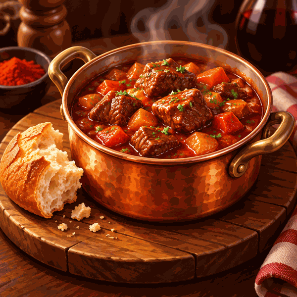

Alle Rezepte › Trieste
Stadt der Reise: Trieste
Goulash triestino
Es kam mit dem Habsburgerreich aus Ungarn und wurde in Trieste zum Hausgericht.
Portionen4
Vorbereitung20 Min.
Garzeit3 Std.
SchwierigkeitMittel
Allergene: Sellerie

Auf Pinterest merkenZutaten
- Rindfleisch (Schulter oder Wade), gewürfelt · 800 g
- Zwiebeln · 600 g
- Edelsüßpaprika · 2 Esslöffel
- Scharfer Paprika · 1/2 Teelöffel
- Tomatenmark · 1 Esslöffel
- Knoblauch · 1 Zehe
- Kreuzkümmel, Majoran, Lorbeer · nach Geschmack
- Schmalz oder Öl · 3 Esslöffel
- Brühe oder Wasser · 500 ml
- Salz · nach Geschmack
Schritt für Schritt
- Die Zwiebeln in Ringe schneiden und im Schmalz bei schwacher Hitze 20 Minuten weich und goldgelb dünsten.
- Den Topf vom Herd nehmen und den Paprika unterrühren: er darf nicht verbrennen.
- Zurück auf den Herd stellen, das Fleisch dazugeben und gut anbraten.
- Tomatenmark, Knoblauch, Gewürze und Brühe dazugeben.
- Zugedeckt bei schwacher Hitze 2–2,5 Stunden schmoren, bis das Fleisch sehr zart und die Soße dick ist.
Der Tipp des Kochs. Mit Polenta oder Kartoffeln servieren, den klassischen Beilagen in Trieste.
Koche dieses Rezept auch in Tavolata
Im Spiel kombinierst du Zutaten, erfüllst Bestellungen und restaurierst italienische Städte, von Firenze bis Milano. Kostenlos, mit echten Rezepten im Rezeptbuch.
Im App Store laden